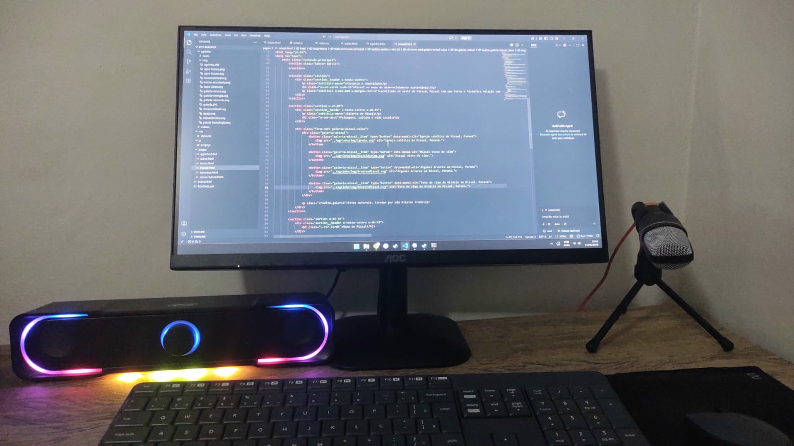

Minha Jornada
Como a tecnologia virou minha paixão
Tudo começou uns 8 anos atrás, quando meu pai trouxe para casa um Xbox 360. A partir dali, o amor por jogos se transformou em uma curiosidade gigante sobre computadores. Hoje em dia eu ainda curto jogar nos momentos livres, mas o que me brilha os olhos de verdade é abrir o capô do sistema, vasculhar os arquivos locais e entender como a mágica do software funciona por dentro!